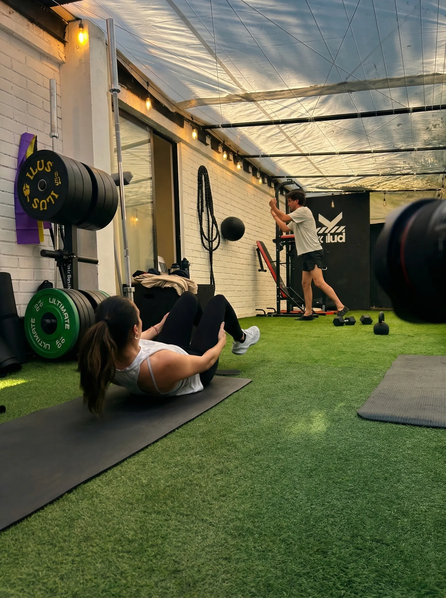
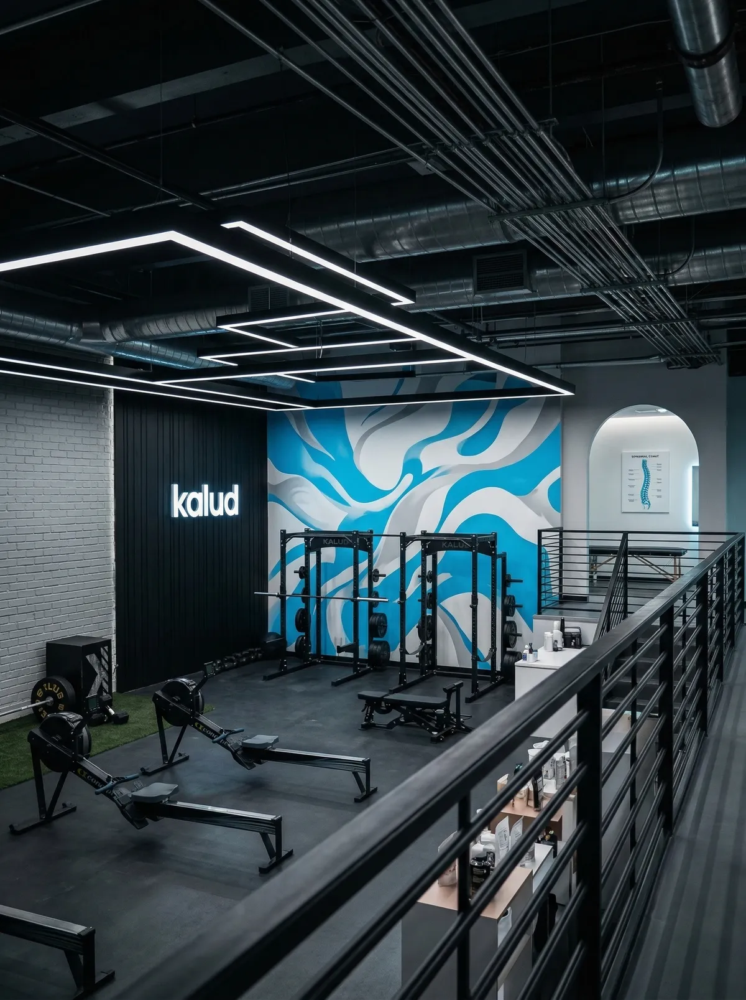

Centro de Rehabilitación y Rendimiento · Vitacura & Buin
Muévete.
Recupérate.
Rinde más.
Tu salud y rendimiento, en un solo lugar. Quiropraxia, kinesiología, entrenamiento y nutrición para todas las etapas de tu vida activa. Muévete sin dolor, recupérate más rápido y rinde más cada día.
Nuestros Servicios
Todo lo que necesitas,
Todo lo que necesitas,
en un solo lugar
Quiropraxia Deportiva
Ajustes quiroprácticos especializados para deportistas. Mejora tu movilidad, elimina el dolor y optimiza tu rendimiento con evidencia científica.
Kinesiología Deportiva
Rehabilitación deportiva, piso pélvico y reintegro funcional. Tratamiento de lesiones y prevención con kinesiólogos especializados en deporte.
Entrenamiento Personalizado
Programas 1 a 1 o grupal funcional hasta 3 personas. Pautas online incluidas. Resultados medibles desde la primera semana.
Nutrición Deportiva
Planes nutricionales personalizados para deportistas. Evaluación inicial, seguimiento y estrategias basadas en evidencia para rendimiento y composición corporal.
Recovery & Masaje Deportivo
Descarga muscular, cupping y recovery avanzado. Técnicas manuales especializadas para optimizar tu recuperación post-entrenamiento.
Por qué Kalud
Un equipo completo
Un equipo completo
para tu salud activa.
En Kalud reunimos quiropraxia, kinesiología, entrenamiento y nutrición bajo un mismo techo. Trabajes en oficina o compitas los fines de semana, nuestro equipo te acompaña desde la primera molestia hasta que vuelves a moverte como quieres.
Equipo multidisciplinario integrado — quiropráctico, kinesiólogo, nutricionista y entrenador coordinados en un solo plan de atención.
Para cualquier etapa de tu vida activa: rehabilitación, prevención de lesiones, mejora del rendimiento o simplemente vivir sin dolor.
Basado en evidencia clínica. Sin promesas vacías — diagnóstico claro, tratamiento efectivo y seguimiento real.
Sin derivaciones innecesarias. Todo lo que necesitas está en Kalud — sin vueltas, sin listas de espera.
Nuestras Sedes
Dos campus deportivos
Dos campus deportivos
en Santiago
Vitacura y BOA Club Linderos en Buin. Cada sede con equipamiento completo y el mismo estándar de atención.

Nueva Sede
Kalud Linderos
BOA Club Linderos, Buin
Campus 21×15m · Canchas fútbol y pádel
Conocer sede
Nuestro Equipo
Los especialistas
Los especialistas
detrás de tus resultados


Testimonios
Lo que dicen
Lo que dicen
nuestros pacientes
★★★★★
"Llevaba 6 meses con dolor de rodilla sin poder correr. Después de 4 semanas con el equipo de Kalud volví a entrenar sin dolor. El enfoque integrado entre quiropraxia y kinesiología marcó la diferencia."
★★★★★
"Iñaki me trató una lesión de isquiotibiales que me tenía fuera de la cancha. En 5 semanas volví a jugar. Ahora también hago entrenamiento preventivo con el equipo y nunca me había sentido mejor físicamente."
★★★★★
"El programa de nutrición con Bernardita cambió completamente cómo me recupero después del entrenamiento. Menos fatiga, mejor sueño y más energía durante los entrenos. 100% recomendado."
Blog Deportivo
Contenido basado
Ver todos los artículos
Contenido basado
en evidencia
Qué es la quiropraxia deportiva y cómo mejora tu rendimiento
Todo lo que necesitas saber sobre los ajustes quiroprácticos deportivos: qué son, cómo funcionan y por qué marcan la diferencia en tu rendimiento.
Esguince de tobillo: tratamiento, rehabilitación y tiempos de recovery
Guía completa sobre cómo tratar un esguince de tobillo, cuánto dura la recuperación y cómo volver al deporte de forma segura.
Qué comer antes y después de entrenar: guía para deportistas
La nutricionista Bernardita Velasco explica qué comer antes y después del entrenamiento para maximizar el rendimiento y acelerar la recuperación.
Preguntas frecuentes
Todo lo que necesitas
Todo lo que necesitas
saber sobre Kalud
No. Kalud trabaja tanto con personas que tienen una lesión activa como con deportistas que quieren mejorar su rendimiento y prevenir problemas. La prevención es uno de nuestros pilares fundamentales.
Depende de cada caso. En la primera evaluación el profesional te indicará un plan personalizado con la cantidad de sesiones estimadas y los objetivos a alcanzar en cada etapa.
Kalud tiene convenio con Isapres. No tenemos convenio con Fonasa. Emitimos boleta con todos los datos necesarios para que puedas gestionar tu reembolso.
Sí, y de hecho es parte del enfoque de Kalud. Nuestros profesionales se coordinan para que el tratamiento sea complementario y maximice los resultados. No hay interferencias entre los servicios.
Puedes agendar directamente en reserva.kalud.cl/agendar o escribirnos por WhatsApp al +56 9 8737 6068. Respondemos dentro de 1 hora en horario hábil.
Sí. Kalud trabaja con clubes y equipos deportivos en Santiago. Si representas a un equipo o club y quieres explorar un acuerdo, escríbenos a inaki@kalud.cl o visita nuestra sección Corporativo.
Contáctanos
¿Tienes una lesión
¿Tienes una lesión
o quieres mejorar
tu rendimiento?
Escríbenos y te respondemos en menos de 1 hora. Sin compromiso, sin costos ocultos. El primer paso es hablar con uno de nuestros profesionales.
Sede Vitacura
Sede Linderos — Buin
BOA Club Linderos, Buin
Teléfono / WhatsApp
Email
Agenda tu hora ahora
Elige el servicio y el profesional que necesitas. Confirmación inmediata.